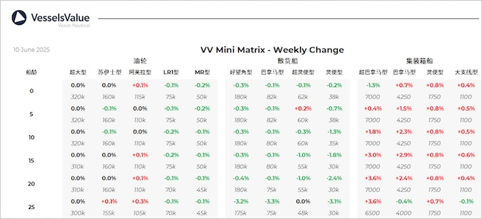

inWeekly Vessel Valuations Report11/06/2025

Bulkers:Bulker values have remained stable this week, with a small decrease in older tonnageHandysize due to sales such as UBC Tokyo
Panamax BC Ivestos 7 (75,100 DWT, Jan 2008, Hudong Zhonghua) sold to unknown Greek buyers for USD 9 mil, VV Value USD 9.8 mil
Supramax BC Oriole (57,800 DWT, May 2011, Yangzhou Dayang Shipbuilding) sold to Union Shipping for USD 12.8 mil, VV Value USD 13.47 mil
Handy BC UBC Tokyo (37,900 DWT, Oct 2005, Saiki) sold SS/DD Due to undisclosed buyers for USD 8 mil, VV Value USD 8.77 mil
Handy BC Arki (30,300 DWT, Feb 2011, Shikoku Dockyard) sold to Unknown Vietnamese buyers for USD 10.5 mil, VV Value USD 10.43 mil
Tankers:Tanker values have remained stable across the board this week as S&P activity is low except for a number of en bloc MR deals that have recently been confirmed
MR2 (Chemical/Product) Nord Joy & Nord Jewel (49,900 DWT, 2018, Japan Marine United) sold to Quantum Global for USD 73 mil, VV Value USD 75 mil
MR2 (Chemical/Product) CL Fugou & CL Huaiyang (49,700 DWT, 2017, Sungdong) sold to undisclosed buyers for USD 61.6 mil, VV Value USD 65.7 mil
MR2 (Chemical/Product) Torm Voyager & Torm Discoverer (46,000 DWT, 2008, Brodotrogir) sold to undisclosed buyers for USD 34.5 mil, VV Value USD 35.8 mil
MR1 (Chemical/Product) Osaka (37,900 DWT, Jan 2008, Hyundai Mipo) sold to undisclosed buyers for USD 14.8 mil, VV Value USD 13.43 mil
Containers:Older Post Panamaxes continue to rise this week, and midage Panamaxes are following suit on the back of recent sales
Post Panamaxes Marcos V (6,350 TEU, May 2005, Koyo Dock) sold for USD 50 mil, VV Values USD 46.9 mil
